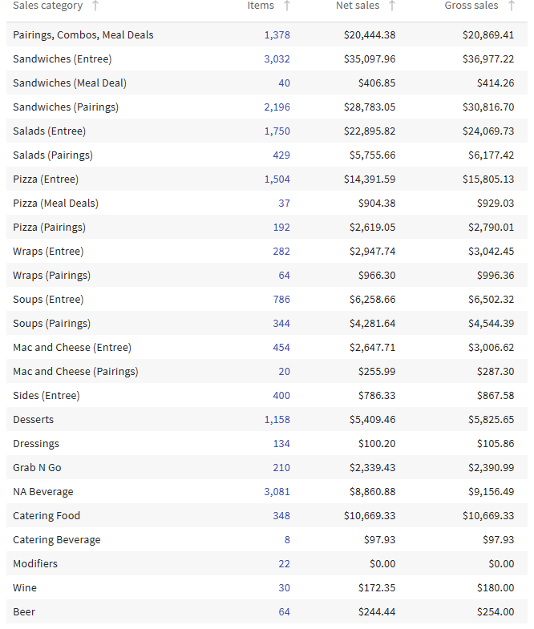
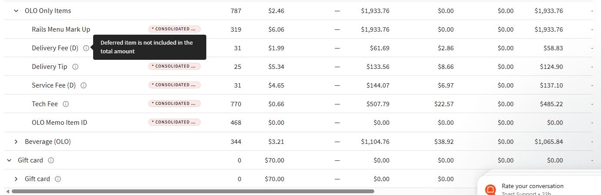
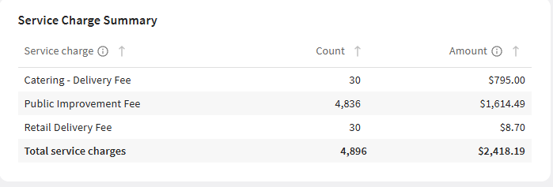
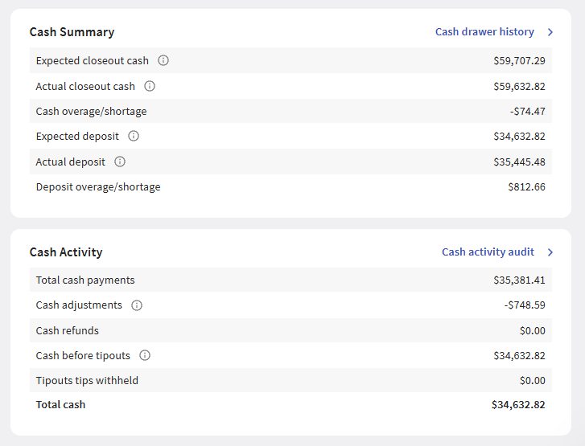
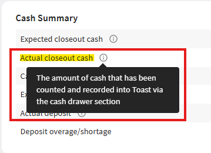
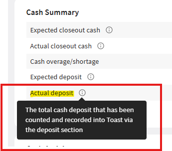

Sales Terminology: Aloha vs Toast How key metrics are defined differently between the two systems
Understanding how Toast defines sales metrics is essential for accurate reporting and comparison to your historical Aloha data. The two systems use the same words but calculate them differently — especially around taxes and discounts.
| Metric | Aloha Definition | Toast Definition |
|---|---|---|
| Gross Sales | Total amount of Item Sales including Order Mode Charges, Surcharges, and all Taxes | Net Sales + Discounts — identifies value before deductions; excludes taxes |
| Item Sales | Price of item only; includes inclusive taxes; excludes exclusive taxes, promos, and comps | Menu Price (Before Discounts) — the regular sticker price of items as they appear on your menu, before any discounts, promos, or comps are applied |
| Net Sales | Item Sales + Order Mode Charges + Surcharges − Inclusive Taxes − Comps − Promos | Net Sales (Before Tax) — what guests actually paid for food and service charges after all discounts, promos, loyalty rewards, and credits are applied. Your true revenue before tax. |
| Taxes | Supports inclusive and exclusive taxes; included in Gross Sales totals | Sales Tax Collected — total tax collected from guests, broken out by tax rate. This is money collected on behalf of the state — it is not revenue. Toast excludes tax from Gross/Net Sales. |
Important Note on Tax Handling Why your Toast totals may look lower than Aloha
This differs from many Aloha configurations where taxes were included in Gross Sales totals. If your daily totals look lower in Toast, this is almost certainly why — not a system error.
| Scenario | Aloha | Toast |
|---|---|---|
| $1,000 food + $80 tax | Gross Sales = $1,080 (tax included) | Gross Sales = $1,000 (tax shown separately) |
| Where does tax appear? | Rolled into Gross Sales total | Separate "Tax" line item in Sales Summary |
| What to compare YoY | Gross Sales (includes tax) | Net Sales (exclude tax for true comparison) |
Finding Your Reports in Toast All reports live at central.toasttab.com or the Toast Now mobile app
Every report you ran in Aloha has a Toast equivalent — they're just organized differently. Use the table below as your cheat sheet. All web reports are accessed at central.toasttab.com → Reports.
| Report Type | Aloha Location | Toast Location |
|---|---|---|
| Sales Summary | Aloha CFC › Sales Summary Report | Reports › Sales › Sales Summary |
| Product Mix / Item Sales | Aloha CFC › Item Sales Report | Reports › Menu › Menu Product Mix |
| Labor Reports | Aloha CFC › Labor Reports | Reports › Labor › Labor Summary / Labor Cost Breakdown |
| Cash Management | Aloha CFC › Cash Reports | Reports › Sales › Cash Drawer Overview / Cash Drawer History |
| Payment Summary | Aloha CFC › Tender Media Report | Reports › Sales › Payments |
| Order Details | Aloha CFC › Transaction Report | Reports › Sales › Order Details |
| End of Day | Aloha POS › Manager EOD Report | POS Device › Close Out Day or Toast Now App › Daily Summary |
Understanding Toast Organizational Concepts Three key data dimensions that control how your sales are grouped and filtered
Toast uses three key dimensions to organize sales data. Understanding all three is critical for accurate reporting and for filtering your reports correctly.
Revenue classification — where sales are credited. Every menu item belongs to one Sales Category.
- Caesar Salad → Food
- Draft Beer → Beverage
- Catering Package → Other
Physical service areas within your restaurant tracked separately to show which area generates the most revenue.
- Bar
- Dining Room
- Patio / Drive-Thru
- Takeout Counter
How the order is fulfilled. Most important filter for understanding your business channel mix.
- Dine In
- Takeout / Curbside
- Delivery
- Online / OLO
Toast Sales Summary Breakdown Deferred Sales, Service Charges, and Fees
The Toast Sales Summary has several line items that don't exist in Aloha. Here's what each one means and where to find detailed breakdowns.
Sales categories in Toast are very descriptive, so you can see detailed breakdowns by revenue type (Food, Beverage, Beer, Wine, Spirits, etc.). The Sales Summary groups all sales by category first, then by Dining Option.

Net amount of sales (gift cards, house accounts, prepaid orders) that were sold on a given day but excluded from Net Sales because payment is for a future date or event.
Payments received in your chosen date range for orders that fall outside that date range — e.g., a prepaid future order, catering invoice, or private event deposit.
You can see a deferred breakdown in the Revenue Summary and in its own section on the Sales Summary:

To find specific figures for deferred revenue items, use the Order Details Report and filter by Menu Group = OLO Only Items:
Reports › Sales › Order Details → Filter: Menu Group = OLO Only Items

Other fees and charges that do not report to menu sales categories appear as Service Charges in the Sales Summary. These are typically auto-gratuity, catering service fees, or other restaurant-defined charges.

Cash Management Reporting Cash Summary, Cash Activity, and Drawer Reconciliation
Displays at a glance:
- Expected closeout cash
- Actual closeout cash
- Overage / Shortage amounts
- Expected deposit vs Actual deposit
- Deposit overage / shortage
Displays:
- Total cash payments
- Cash adjustments
- Refunds
- Cash before tipouts
- Credit / non-cash tips
- Tips withheld
- Total cash



Available Cash Reports
| Report Name | Description | Best For |
|---|---|---|
| Cash Activity Audit | All cash activity over a chosen date range — every payment, adjustment, and refund | Multi-day review |
| Cash Drawer Overview | Cash activity across multiple restaurants on a single day. Requires restaurant group setup. | Multi-location |
| Drawer History | Complete overview of all cash activity at a single location on a single day | Daily EOD |
Essential Toast Reports for Daily Operations The two reports you'll use every single day
Reports › Sales › Sales Summary
- Net Sales (primary revenue metric)
- Gross Sales (Net Sales + Discounts)
- Discounts & Comps breakdown
- Gratuity / Service Charges
- Tax Amount (by tax rate)
- Tips (credit card tips)
- Sales by Dining Option
- Sales by Revenue Center
- Sales by Sales Category
Export to Excel gives you 3 tabs:
- Summary — top-level totals
- Hourly Sales — spreadsheet of sales by hour
- Details — full line-item detail
Reports › Menu › Menu Product Mix
| View | What It Shows | Use It To… |
|---|---|---|
| Top Groups | Sales by menu group (Appetizers, Entrees, Beverages, etc.) | Understand category performance across the menu |
| Top Items | Individual item performance: quantity sold + revenue | Identify bestsellers and slow movers |
| Top Modifiers | Most popular modifications — add-ons, substitutions | Evaluate upsell opportunities and pricing |
| 86 Report | Out-of-stock items and how long they were 86'd | Identify ordering and prep issues |
High-Value Reporting Insights for Restaurant Success Beyond basic sales tracking — use data to optimize profitability
These five reporting strategies will help you optimize profitability, control costs, and make data-driven decisions with Toast.
Don't just look at daily labor percentage — break it down by meal period using the Sales Summary hourly export combined with labor reports.
- Export Sales Summary with hourly breakdown
- Compare sales by hour to scheduled labor hours
- Identify over-staffed or under-staffed periods
- Adjust future schedules based on traffic patterns
Use the Menu Product Mix report to identify high-margin items and promote them strategically. Classify every item into one of four quadrants:
| Item Type | Popularity | Margin | Action |
|---|---|---|---|
| ⭐ Star | High | High | Feature prominently — these are your best items |
| 🐴 Plow Horse | High | Low | Consider price increases — guests will accept it |
| 🧩 Puzzle | Low | High | Train staff to upsell — great margin, just needs visibility |
| 🐕 Dog | Low | Low | Consider removing from menu — not earning its spot |
Monitor average check size in the Sales Summary under Orders › Average Check. Track this by dining option to understand channel performance.
- Dine-in check average should be 20–30% higher than takeout
- Track the Top Modifiers report to see if add-ons (extra protein, premium sides) are being sold
Toast tracks every discount and comp by employee in the Sales Summary. Set clear policies and monitor regularly.
- Discounts exceeding 3–5% of gross sales
- Individual employee discount rates significantly higher than team average
- Increasing discount trends without corresponding customer satisfaction improvements
Access detailed discount reports: Reports › Sales › Order Details → filter by discounts/voids
Toast Now mobile app provides instant comparisons to same day last week and last year. Use this for quick trend identification throughout the day.
- Sales variance >10% week-over-week requires investigation
- Traffic count (# of checks) declining while check average is rising = possible pricing sensitivity issue
- Labor cost % increasing while sales are flat = scheduling inefficiency
Toast Now Mobile App Real-time management in your pocket
The Toast Now app puts critical reporting and controls in your pocket. Download from the App Store or Google Play to manage operations on the go.
- Real-time sales dashboard with hourly breakdowns
- Labor cost tracking with hour-by-hour comparisons
- Multi-location view (switch between stores instantly)
- Clock-in / clock-out management
- Same-day-last-week and same-day-last-year comparisons
- Daily Summary for quick EOD review
Check Toast Now at three key times each day to catch issues before they become problems:
Toast Reporting Best Practices Daily, Weekly, and Monthly checklists for every manager
Every morning or end of day, complete these tasks:
- Review Sales Summary for previous day's Net Sales vs target
- Review discounts and voids by employee — address anomalies immediately
- Compare actual cash drawer to expected in Drawer History
- Note any major sales variance from same day last week
Once per week, complete a deeper analysis:
- Export 7-day Sales Summary and analyze trends
- Review Menu Product Mix — identify slow movers and menu adjustment opportunities
- Calculate week's prime cost percentage
- Review labor scheduling vs actual sales by hour — optimize next week's schedule
Monthly business performance review:
- Generate 30-day Sales Summary and compare to budget
- Analyze sales by Revenue Center — consider reallocation of resources
- Review dining option mix trends (dine-in vs takeout vs delivery)
- Identify top 20% of menu items generating 80% of revenue (Pareto principle)
- Compare monthly labor cost % to previous 3-month average
Common Transition Challenges Frequently asked questions from the Aloha → Toast switch
Support & Training Resources How to get help when you need it
Access: central.toasttab.com
Articles, video tutorials, and step-by-step guides for every feature. Use the search function to find specific topics like "Sales Summary" or "Labor Reports."
Training Videos Available
Phone: 617-249-4710 (24/7 for urgent issues)
Chat: Mon–Fri 8 AM – 2 AM ET via central.toasttab.com
System Status: status.toasttab.com — check here first if Toast isn't behaving as expected
Contact your Operations or IT team for:
• Wage rate configuration issues
• Multi-location reporting setup
• Custom report access questions
• Historical Aloha data comparison
Toast Support: 617-249-4710
Web Reports: central.toasttab.com
System Status: status.toasttab.com
Toast Now App: Available on iOS & Android